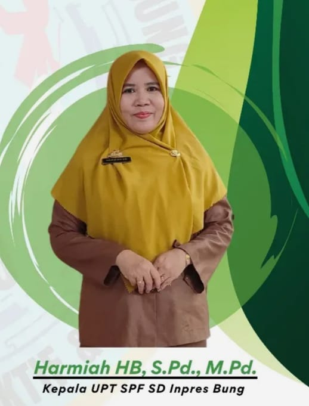
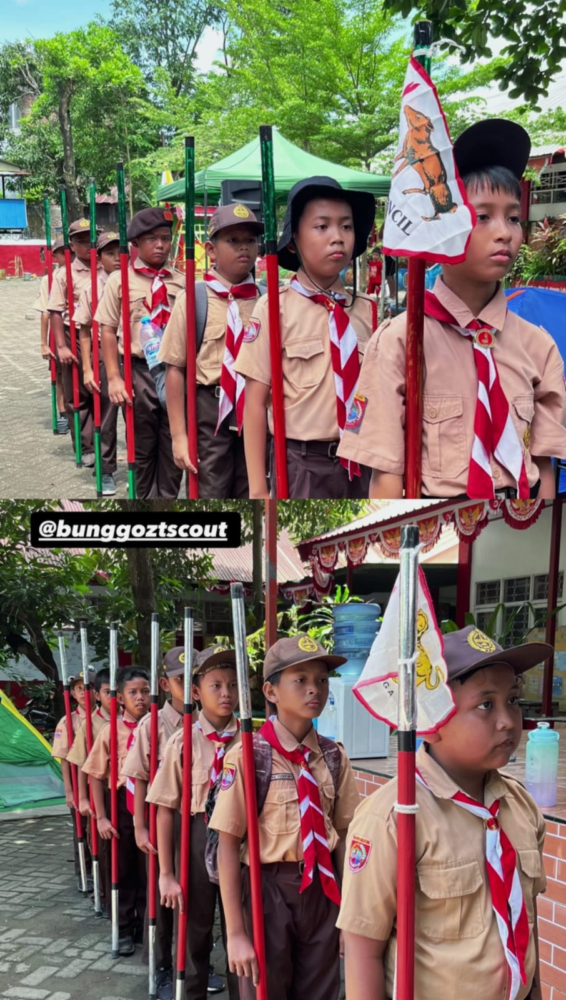
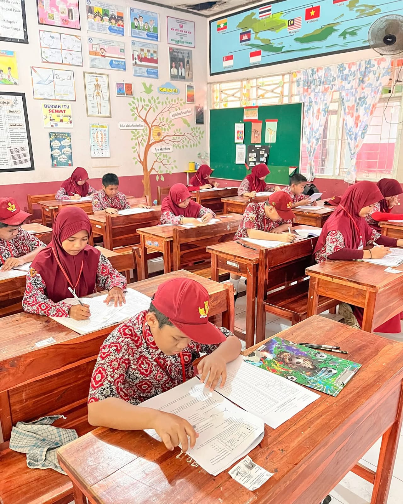
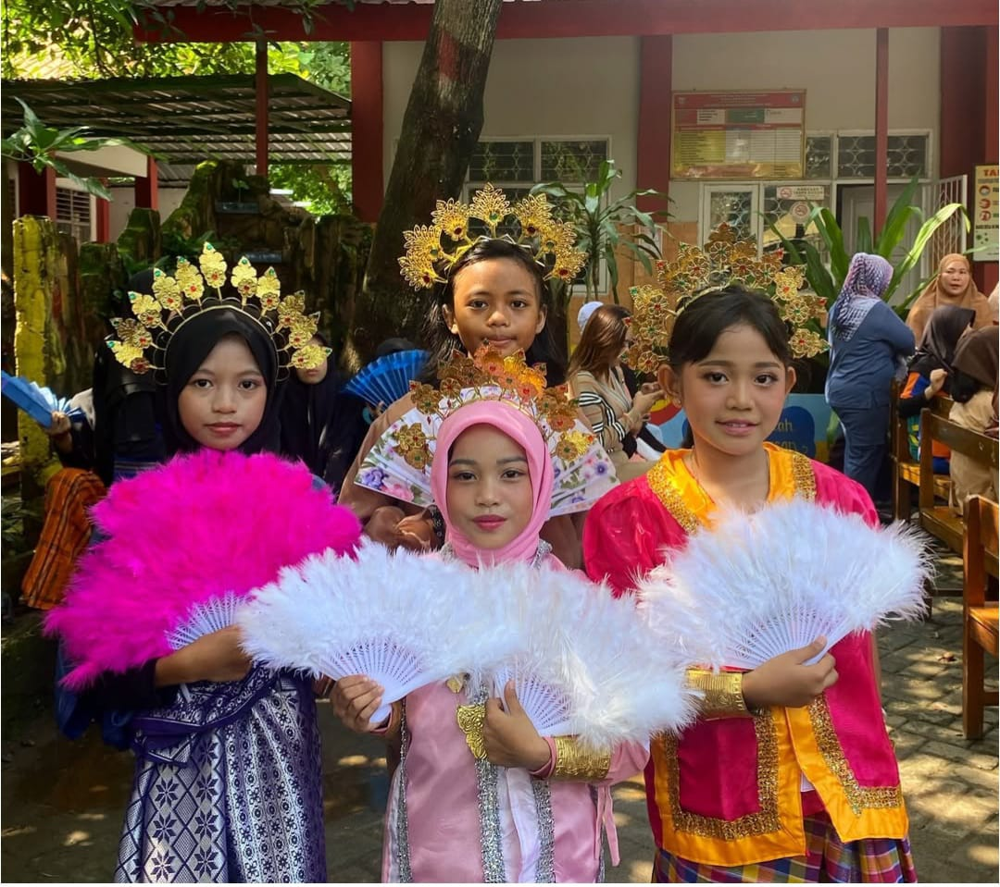

Membangun masa depan digital untuk pendidikan yang lebih baik dan berkarakter.
Mulai JelajahiUPT SD INPRES BUNG berdedikasi untuk menciptakan lingkungan belajar yang inovatif dan inklusif. Kami fokus pada pengembangan karakter siswa serta penguasaan teknologi dasar sejak dini.

Assalamu’alaikum Warahmatullahi Wabarakatuh,
Salam Sejahtera bagi kita semua, Om Swastiastu, Namo Buddhaya, Salam Kebajikan.
Puji syukur kita panjatkan ke hadirat Allah SWT, Tuhan Yang Maha Esa, atas segala limpahan rahmat dan karunia-Nya, sehingga website resmi UPT SPF SD Inpres Bung ini dapat hadir di tengah-tengah kita.
Di era globalisasi dan kemajuan teknologi informasi 4.0 ini, keberadaan sebuah website sekolah bukan lagi sekadar pelengkap, melainkan kebutuhan mendasar. Website ini kami luncurkan sebagai wujud komitmen sekolah dalam meningkatkan transparansi informasi, akuntabilitas, dan pelayanan prima kepada masyarakat, khususnya bagi orang tua dan peserta didik.
Melalui media ini, kami berharap dapat menjalin komunikasi yang lebih efektif antara sekolah, komite, orang tua, dan masyarakat luas. Kami bertekad mencetak generasi penerus bangsa yang tidak hanya cerdas secara intelektual, tetapi juga memiliki karakter kuat sesuai dengan Profil Pelajar Pancasila.
Mari kita bergandengan tangan, bersinergi memajukan pendidikan di UPT SPF SD Inpres Bung demi masa depan anak-anak kita yang gemilang.
Maju terus pendidikan Indonesia!
Wassalamu’alaikum Warahmatullahi Wabarakatuh.
Kepala UPT SPF SD Inpres Bung
Hermiah HB, S.Pd., M.Pd.

Kegiatan Pramuka untuk melatih kedisiplinan dan kemandirian siswa.

Metode pembelajaran aktif dengan fasilitas ruang kelas yang nyaman.

Seni tari dan keragaman budaya.
Ada pertanyaan? Kami siap membantu Anda.
📍 Jl. Perintis Kemerdekaan 9, Bung, Makassar.